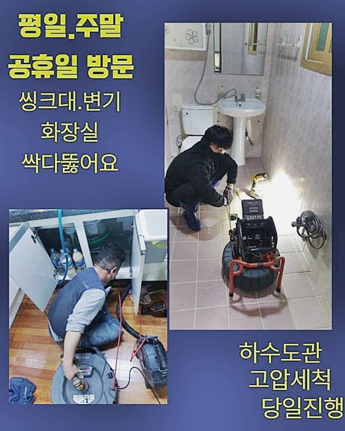
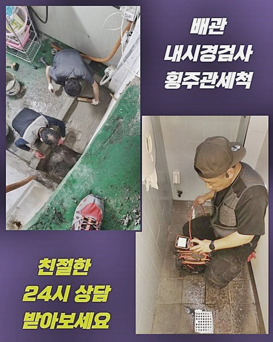
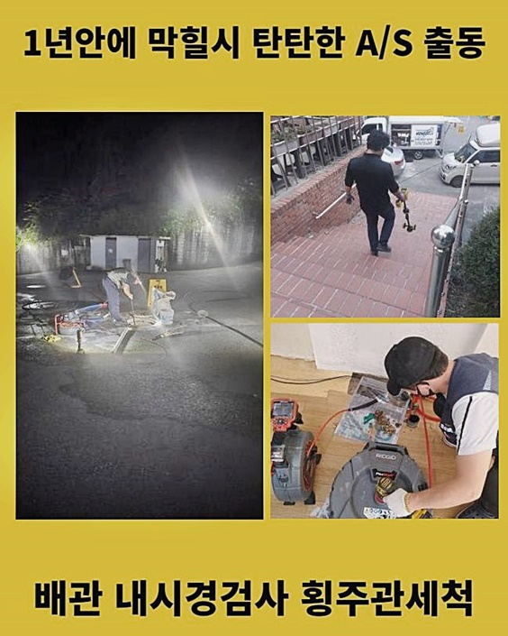
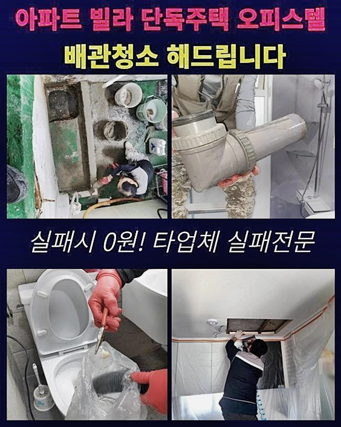
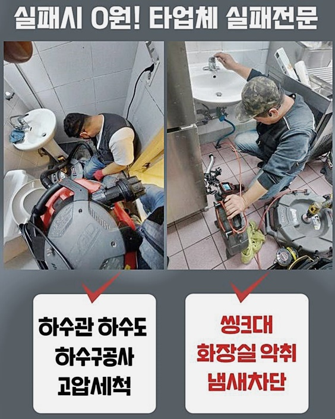
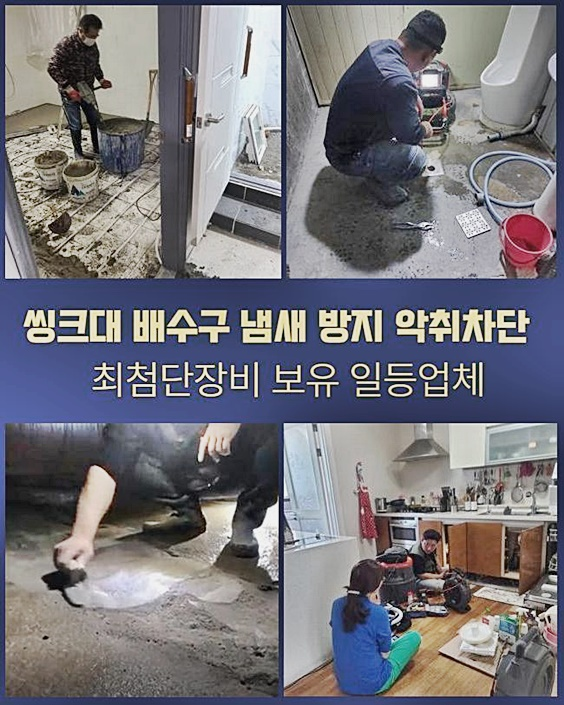

🏠 수원 율천동싱크대배수관역류 정자2동 맨홀역류 배관뚫는업체
용인시 처인구 배관막힘 전문 시공 후기

📋 작업 개요
- 위치: 용인시 처인구, 수원시 영통구, 화성시 동탄
- 서비스 유형: 배관막힘, 누수수리, 고압세척, 내시경점검
- 작업 일시:
- 업체명: 하수구수사대 (010-5615-2118)
🔍 문제 상황
수원 율천동싱크대배수관역류 정자2동 맨홀역류 배관뚫는업체
배수라인이 막혀버리면 최대한 서둘러서 신경써주는게 좋은데요
막힘들을 방치한다면 갑자기 물들이 솟구칠 수도 있고 누수문제로도 심화되어 시정에 어려움들이 발생됩니다
배수관에서 역류되는 증세가 발생된 사태가 벌어졌다면 어쩔방도가 없겠지만 문제 발생 전 예방하고자 전문가의 도움들로 해결해 보시는 것이 좋은데요
며칠전 찾아뵈었던 장소는 주거지와 상가들이 혼재한 건축물이였어요 이러한 건축물은 복합적인 시설을 포함하고있는 현장이 많으므로 유선을 통하여는 안내가능한 사항들이 많지않아요
이러한 상황으로 인하여 확실하게 된 정보들을 인지하도록 현장으로의 방문들을 마치고 설명해드리고 있어요
방문드리니 상가들과 이어져있는 가정집 배수관이 막히면서 역류해버리는 증세가 생겨난것이죠
역류들이 발현되면서 2차적인 피해들이 현실이되면 다양한 장비들의 사용이 필요시 되죠
때문에 이런 상황일 시 필히 다양한 문제를 시정한 전문인에게 문의를 해보심이 좋겠습니다
방문 후 고객분의 내용전달을 바탕으로 배수구를 관찰했습니다
일부분이 아니라 복합적으로 부분마다 막힌것이면 관찰할 필요가 있는 시설은 공동 하수관로였는데요

🔎 원인 분석
💡 전문가 진단: 정밀 진단 장비를 사용하여 슬러지의 고착 여부를 판명하고 타격/세척 작업을 실시했습니다.
공용배관을 살펴볼 생각으로 주차장으로 내려가 천정쪽의 배수관으로 가보았는데요
공동하수관을 확실히 뚫어도 메인배관들과 합쳐진 관의 역류증세들이 어렵지않게 시정됩니다
하지만 천정부에 위치하고있던 관로여서 청소들을 실시하기엔 힘들었죠
이런 사태가 벌어졌다면 사다리설치를 하여 저희들이 올라가죠
메인관로가 막히게 된 경우라면 부유물들을 흡입하여 뚫어내는 석션기기만을 가지고서는 뚫어내는것이 어렵습니다
샤프트장치로 고착물을 분쇄시키던지 때에 따라서 고압노즐방식이 요구되는데요
무슨 방법들이 실시되야하는지 배수라인을 점검하고 해당 연유를 알고자 내시경카메라를 투입했습니다
내시경으로 깊은 곳까지 살피니 긴 기간에걸쳐 퇴적된 기름잔해가 통로들을 방해하여 거꾸로 역류해버리는 불상사가 발생한건데요
곳곳마다 빠질수 없어서 자연스럽게 거주지로 이어진 각각의 배관으로 흐르게할 시 하수들은 조만간 역류해버리고 말거에요
그리하여 이 배수구를 고객분에게 설명드린뒤 작업을 수행해주었습니다
배관이 불그스름하게 보여지는데 해당 색처럼 관찰되는 까닭은 벽측에 슬러지들이 있어서인데요
깨끗한 하수도라면 이러한 모습없이 깔끔하게 관찰되나 이렇게 잔해물이 많을땐 내시경장비에 확실하게 보여지는데요

🔧 작업 과정
저희 하수구막힘의 업체가 간 장소의 문제를 시정해보고자 샤프트기기를 사용해주어도 무분별하게 삽입해주지않고 필히 배관 내부 문제들을 확인해주며 진행합니다
혹시 과도한 힘을 줄 경우 배수관을 다치게하고 심할 경우 물샘이 야기되기에 믿을 수 있는 전문인을 통하여 진행하시는 것이 우선입니다
플렉스 샤프트 내시경으로 꽤 긴 기간에걸쳐 제거시키는 작업들을 실시했어요
저희전문인들이 방문드렸었던 장소의 이물들이 장기간 고착화가 진행되 굳어버린 슬러지들이 대량이라 지속적인 과정들이 있어야했어요
메인집수라인에 막힘들이 발발하게 되면 배수관이 길이가 길어서 문제 부위마다를 세척해주는 단계들을 진행합니다
위와같은 것들을 바로잡을 목적으로 화장실쪽과 주변에 있었던 창고내부쪽과도 이어진 배수관을 재발의 여지가 없는채로하는 단계도 필요했죠
점검구 부분을 조심성없이 다루면 오수가 낙하할지도 모르는 불미스러운 일이 불가피하기에 비닐로서 보양도 빠트리지않고 실시했어요
아래로 수도가 빠지게끔 연결을 해보았어요
혹여 이런 부분까지 주의하여 진행해주지 않는다라면 뚫는것은 이뤄지겠지만 마무리과정은 깔끔할 수가 없겠습니다
해당 사항들도 배관해결사가 가지고있는 노하우라고 판단하고 있어요
찾아뵌 곳은 욕실공간과 합쳐진 하수라인으로, 잔해들이 대량으로 있었죠 생활 중 발생되는 잔해들이 하수관의 제기능을 잃게하는것이 대부분이겠지만 큰 사이즈의 이물들이 문제가 되어버리기도 하죠
장애의 이유를 살폈더니 샤프트장비론 온전하게 세척을 해주는것이 쉽지않겠단 생각들이 스쳐 지나갔어요
샤프트로도 마땅한 해결이 안되면 알맞은 크란즐을 써서 세척해줘야합니다
차와 이어진 장비들보다는 컴팩트하지만 성능에 있어선 뒤지지 않아서 문제에 딱 들어맞는 장치들을 찾아내는것도 전문진의 자질이라고 굳게 믿고있죠
뚫기를 속행해주며 위치별로 확실하게 청소되었는지 역류증상이 있진않은건지 진단하고 통수테스트 과정을 수행하였는데요
저희들이 내방했던 현장들이라면 내시경기기로 피해가 사라진건지 테스트절차로 확인해주어야 마침내 배수 작업이 마무리되었다고 생각해도 무방합니다
끝으로 오차없이 작업이 끝났죠 의뢰인분에게 빈틈없이 하수관을 확인시켜드리고서
지금껏 수도의 이용이 어려웠을 고객분이 안심하실수 있을거란 여기니 저희들도 좋았죠


✅ 작업 완료
문제들이 발생하여 작업들을 이어갈때 여러 잔해가 확인이됩니다
문제가 나타났을 경우 서둘러서 처리하도록 전문가를 통해 도움을 청하면 빈틈없이 해결이 가능해도, 방치하여 미룰 경우에 비용이 상승된 작업을 후회하며 진행하게될지 몰라요
심한 증상에 처해있더라도 저희전문진은 항시 고객맞춤형으로 해결합니다
저희전문진은 진단을 거쳐 거쳐야하는 과정들만 진행하니 걱정없이 의뢰해보세요!
상가시설과 가정과 같은형태로 물사용이 불가피한 장소라면 지역적 한계없이 청소해주는 것에 집중하고있기에 꾸준히지 주저없이 불러만 주세요!



⚠️ 하수구 배관 막힘 예방 및 관리 가이드
- ✅ 머리카락, 비닐, 물티슈 등 물에 분해되지 않는 이물질은 절대 흘려보내지 마세요.
- ✅ 기름기 많은 식기는 설거지 전 키친타올로 먼저 기름때를 닦아내세요.
- ✅ 주기적으로 배수구에 뜨거운 물을 가득 부어주어 유지방 고착을 방지하세요.
- ✅ 작업 후 1년 이내 재발 시 무상 A/S 보증 서비스를 제공합니다.
💡 핵심 정리
- 확실한 장비 작업(내시경 점검 및 샤프트 스케일링)으로 원인을 뿌리 뽑습니다.
- 작업 후 1년 이내에 동일한 부위 재발 시 100% 무상 A/S 서비스를 보장합니다.
- 서울 · 경기 · 인천 전 지역에 24시간 언제든 긴급 출동할 수 있도록 항시 대기 중입니다.
❓ 자주 묻는 질문 (FAQ)
🚨 용인시 처인구 배관막힘 문제로 고민이신가요?
정확한 원인 진단과 확실한 시공으로 재발 없는 해결을 약속드립니다.
24시간 긴급 출동 | 서울 · 경기 · 인천 전지역 | 1년 내 재발 시 무상 A/S